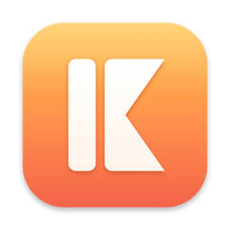
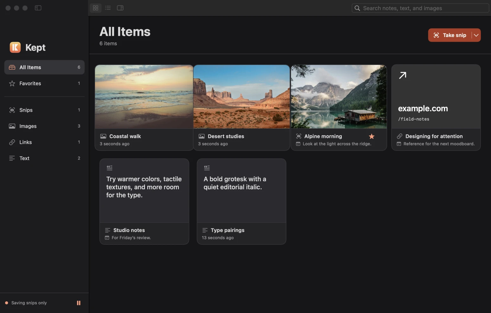

Snip and keep moving.
Press ⌃⌥S to grab a region. Kept copies it to your clipboard and saves it once in your library.

KeptA CAPTURE LIBRARY FOR MAC
Snip your screen, save what you copy, and find it all again in a private library on your Mac.

WORKFLOW
Press ⌃⌥S to grab a region. Kept copies it to your clipboard and saves it once in your library.
Opt in to clipboard capture for images, links, or text. Add a note or favorite an item so you can come back to it.
Search your notes, copied text, and words inside images. Press ⌃⌥K to open Quick Search from anywhere.
INTERACTIVE DEMO
Explore a sample Kept library. Try searching for “ridge” to match a note or “studio” to find a text clip.

LOCAL BY DESIGN
Kept stores captures and its search index in a local SQLite library with image files alongside it. Connect Claude Code or Codex through Kept’s read-only MCP server to search and open saved items.
KEPT MCP READ-ONLY
search_libraryget_itemlist_recentBuild Kept on macOS 14 or later with the Xcode Command Line Tools and Swift 6. Repository access is required.
View build instructions